I shot overlapping photos, mainly indoors, computed homographies from point correspondences, implemented inverse warping with nearest-neighbor and bilinear interpolation, rectified planar regions, and blended registered views into panoramas.
I rotated the camera about (approximately) a fixed center of projection to keep parallax small
and captured ~50–60% overlap. Below are three sets I use throughout
(all images are in images/).
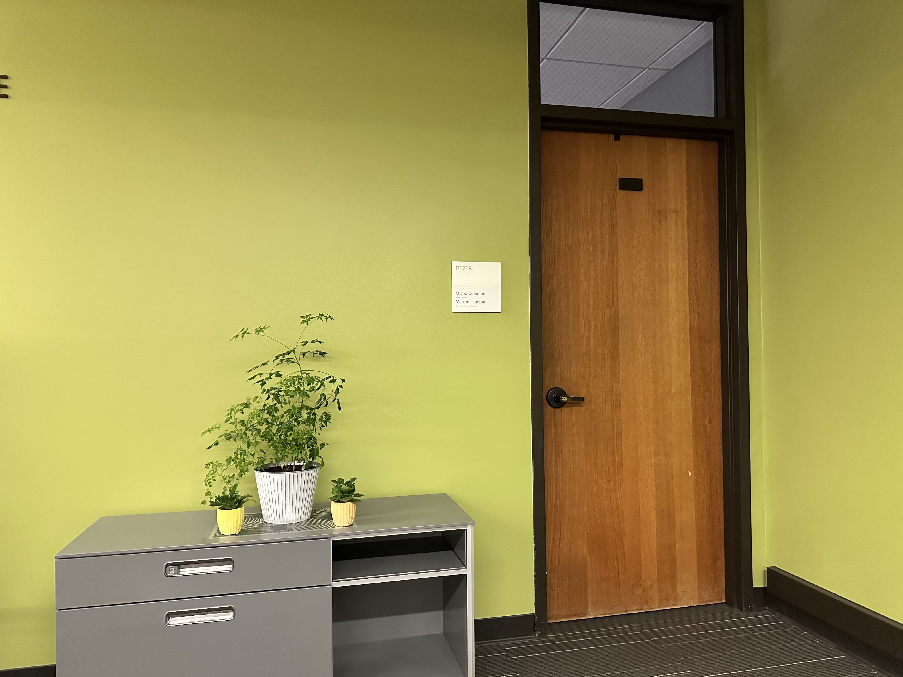
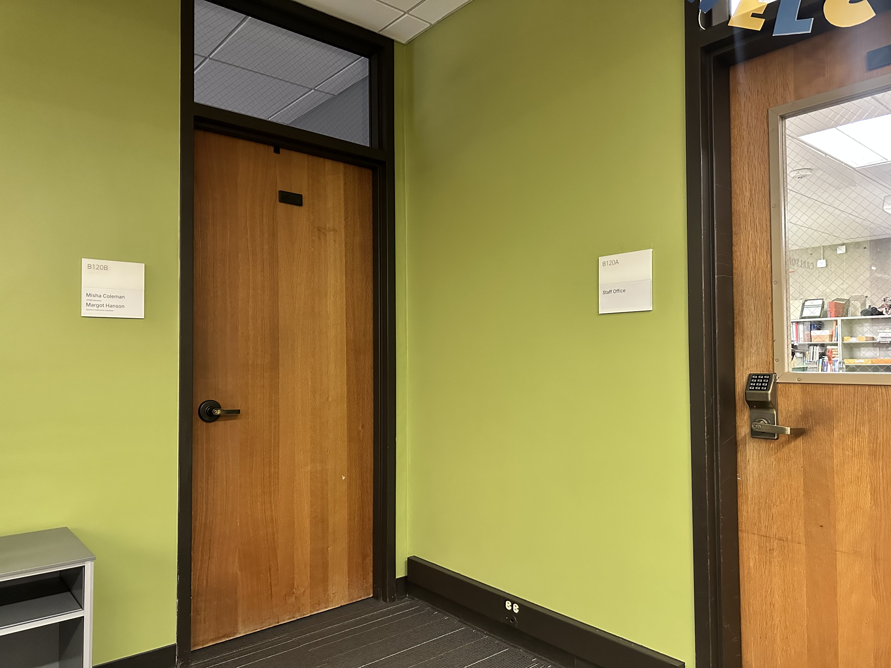
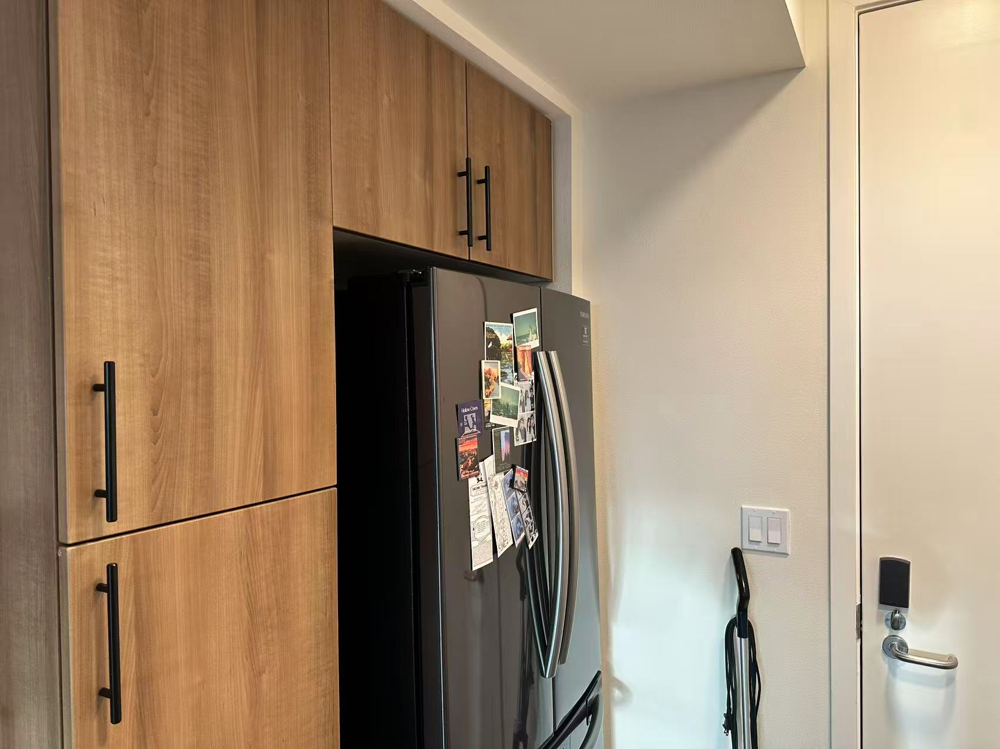
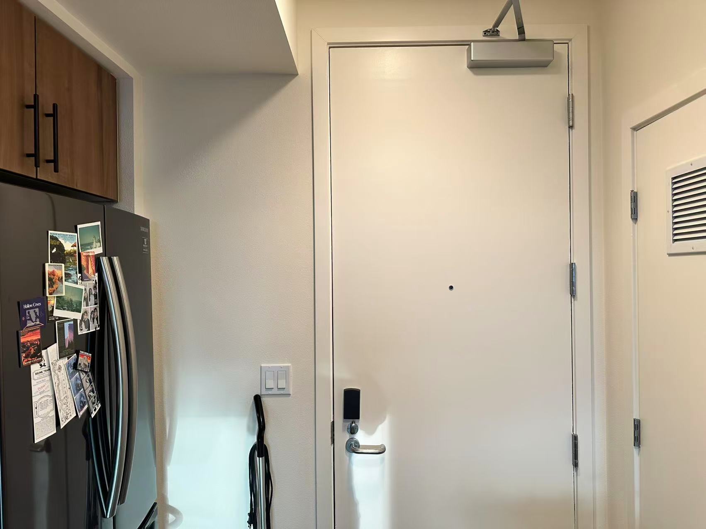
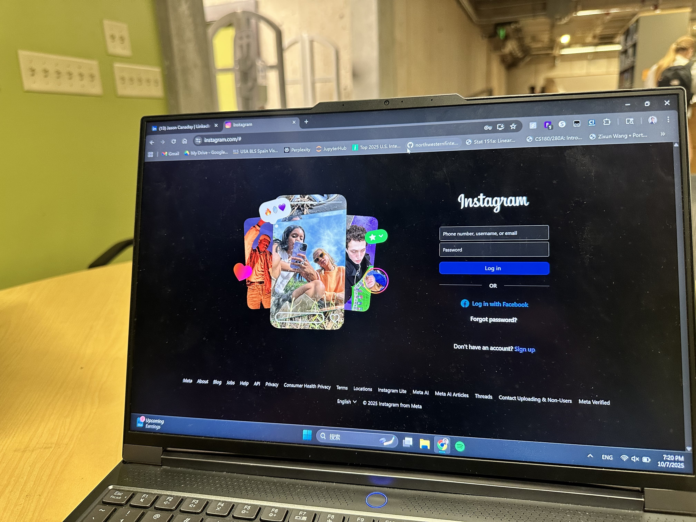
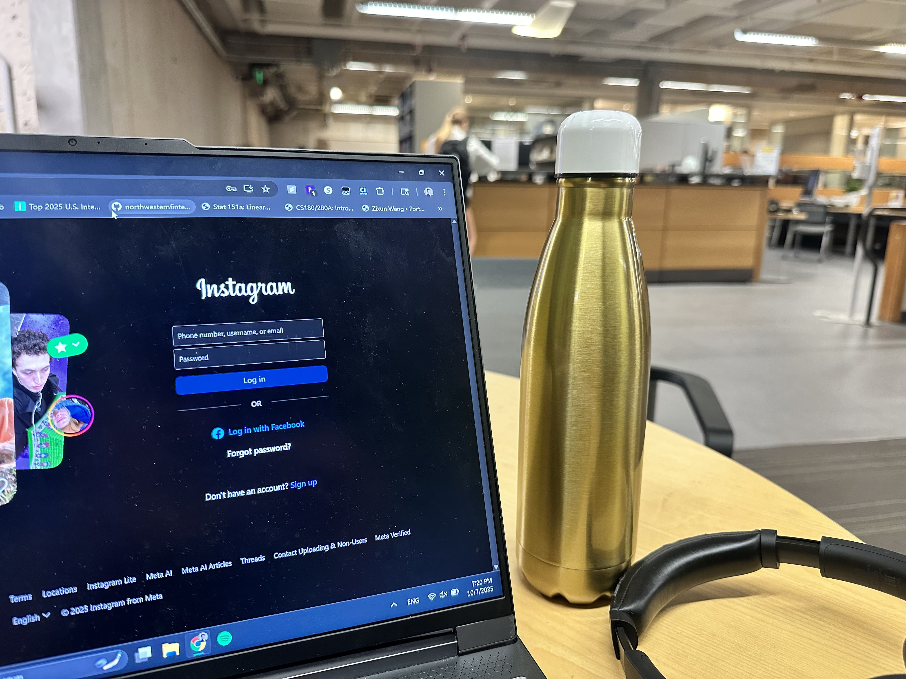
From each correspondence we get two linear constraints that stack into
A h = b, where h holds the 8 unknown homography parameters
(H[2,2]=1).
For each (x, y) → (x′, y′):
[-x, -y, -1, 0, 0, 0, x·x′, y·x′] · h = -x′
[ 0, 0, 0, -x, -y, -1, x·y′, y·y′] · h = -y′
Stacking all matches yields A ∈ ℝ^{2n×8} and b ∈ ℝ^{2n}. For n > 4 the
system is overdetermined; we estimate h in least squares:
h = argmin ||A h − b||₂ = (AᵀA)⁻¹Aᵀb
Finally, reshape h into H and set the scale so H[2,2]=1:
H = [[h11 h12 h13]
[h21 h22 h23]
[h31 h32 1]]
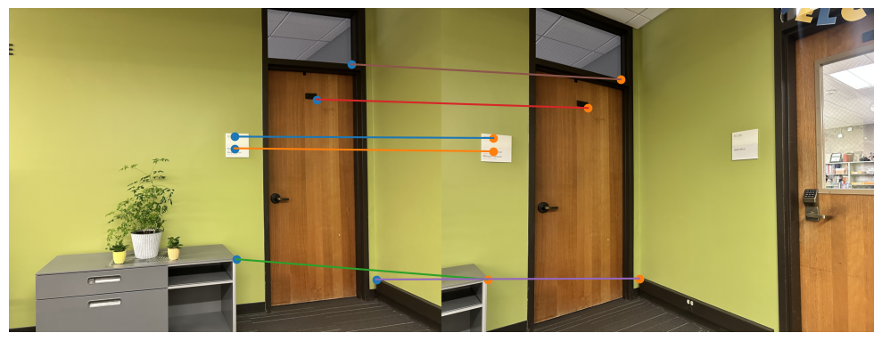
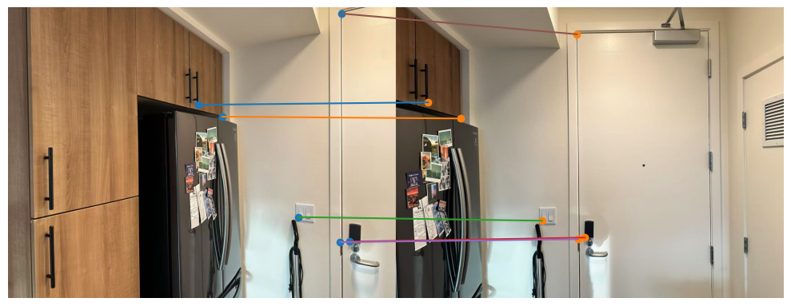
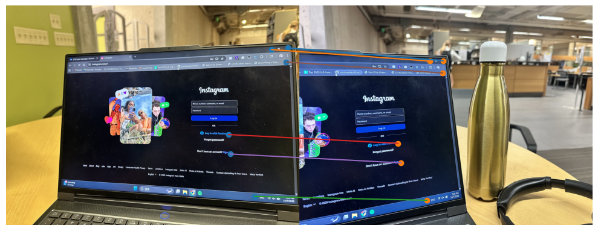
door:
A shape: (12, 8)
b shape: (12,)
Recovered H:
[[ 2.14345224e+00 -1.25890840e-01 -3.60926874e+03]
[ 4.59048265e-01 1.63958309e+00 -1.05987587e+03]
[ 2.88152784e-04 -5.46288636e-05 1.00000000e+00]]
fridge:
A shape: (12, 8)
b shape: (12,)
Recovered H:
[[ 2.49938918e+00 2.10353365e-02 -1.84772222e+03]
[ 5.83305354e-01 2.04216792e+00 -6.39509053e+02]
[ 8.72167306e-04 4.90642950e-06 1.00000000e+00]]
laptop:
A shape: (12, 8)
b shape: (12,)
Recovered H:
[[ 2.34799055e+00 1.29850866e-01 -4.77387811e+03]
[ 3.91098139e-01 1.94882150e+00 -9.58345438e+02]
[ 3.19640243e-04 -1.56615216e-05 1.00000000e+00]](Each case uses N=6 correspondences ⇒ 2N=12 equations; I report the shapes of A and b and the final H normalized so H[2,2]=1.)
With the homography H, I warp each image into a target frame via inverse mapping: for each destination pixel q=[x′,y′,1]^T I compute p ∝ H⁻¹q and sample the source using two from-scratch methods—warpImageNearestNeighbor(im, H) (fast, blocky) and warpImageBilinear(im, H) (smoother, subpixel-aware). I size the canvas by warping the four source corners, and I keep an alpha mask of valid samples for later blending. Pixel centers are treated as integer coordinates to avoid half-pixel confusion. For sanity checks and deliverables, I perform rectification by mapping a clicked quadrilateral to a rectangle via rectify_to_rectangle(image, src_quad, W, H, method), and I show side-by-side bilinear vs nearest results (..._rectification.png files).
We can observe that bilinear interpolation does produce smoother results, however, at lower resolutions the difference is less pronounced. Below are rectified views of the planar surfaces in each set.
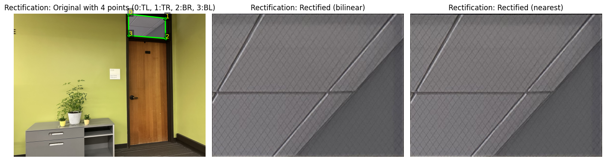
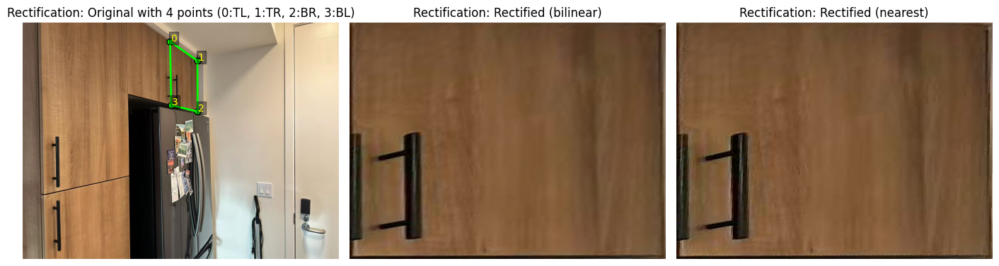
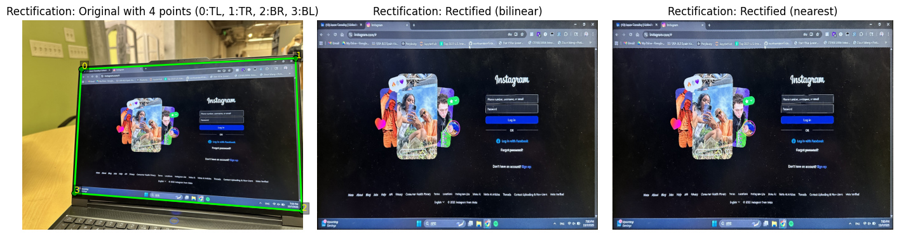
After matching images with a homography, I pick a frame to work in (either keep one image as the reference or choose a new common frame). I estimate how big the final canvas should be with compute_canvas_bounds_from_warps, warp each image into that canvas using inverse mapping (warpImageBilinear or warpImageNearestNeighbor), and blend with weighted averaging instead of overwriting. To make seams softer, I multiply each image’s valid-pixel mask by a simple edge falloff from feather_alpha_from_edges, add it into an accumulator with place_on_canvas_feather, and at the end divide by the total weights using finish_canvas.
If feathering still leaves faint double edges, I turn on a small two-level Laplacian blend (assemble_mosaic(..., use_laplacian=True)), which uses two_level_laplacian_blend to blend a blurred (low-freq) version and the remaining details (high-freq). This keeps large areas smooth while preventing “ghost” edges in overlaps. Using this pipeline, I produce the required three mosaics with reduced seams.
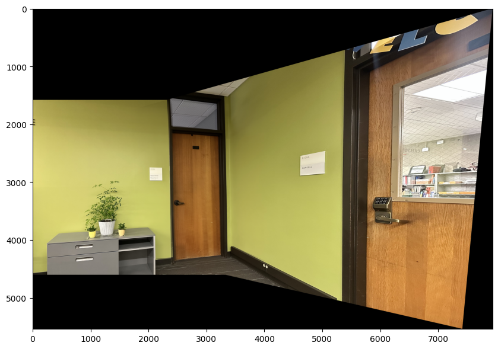
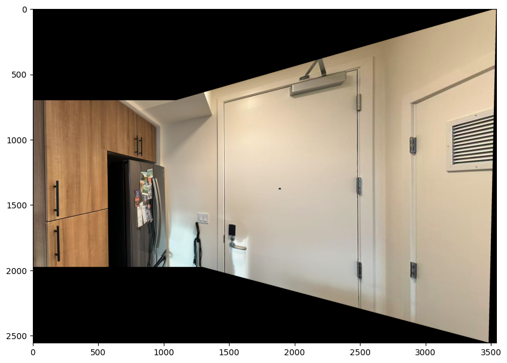
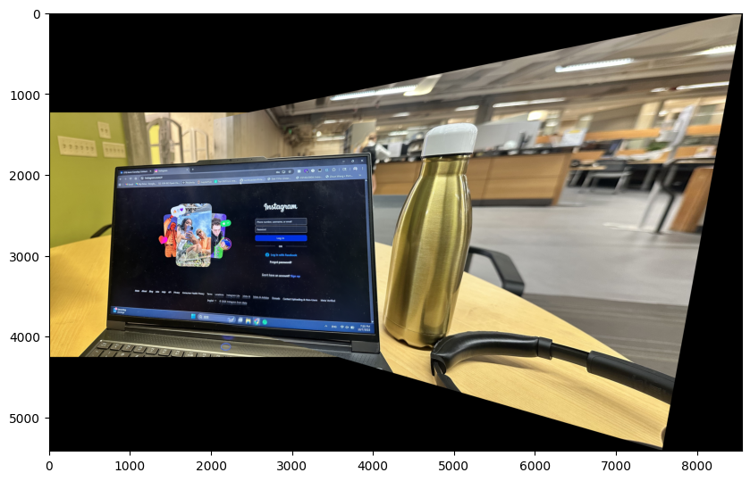
Pixel picking was tedious, especially on the laptop set where reflections and perspective distortion made corners hard to identify; I had to be careful to avoid off-by-one errors in the warping and blending steps. It is also hard to get a good shot because of lighting changes, motion blur, and parallax.